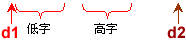

算术运算指令是反映CPU计算能力的一组指令，也是编程时经常使用的一组指令。它包括：加、减、乘、除及其相关的辅助指令。
该组指令的操作数可以是8位、16位和32位(80386+)。当存储单元是该类指令的操作数时，该操作数的寻址方式可以是任意一种存储单元寻址方式。
指令的格式：
ADD Reg/Mem, Reg/Mem/Imm
受影响的标志位：AF、CF、OF、PF、SF和ZF
指令的功能是把源操作数的值加到目的操作数中。
指令的格式：
ADC Reg/Mem, Reg/Mem/Imm
受影响的标志位：AF、CF、OF、PF、SF和ZF
指令的功能是把源操作数和进位标志位CF的值(0/1)一起加到目的操作数中。
指令的格式：
INC Reg/Mem
受影响的标志位：AF、OF、PF、SF和ZF，不影响CF
指令的功能是把操作数的值加1。
指令的格式：
XADD Reg/Mem, Reg ;80486+
受影响的标志位：AF、CF、OF、PF、SF和ZF
指令的功能是先交换两个操作数的值，再进行算术“加”法操作。
解：32位数d1和d2在内存中如下所示。
…… …… ……
MOV AX, word ptr d1 ;由于d1是双字类型，必须使用强制类型说明符。以下同。 MOV DX, word ptr d1+2 ;(DX,AX)构成一个32位数据 ADD AX, word ptr d2 ;低字相加 ADC DX, word ptr d2+2 ;高字相加。在低字相加时，有可能会产生“进位” MOV word ptr d1, AX ;低字送给d1的低字 MOV word ptr d1+2, DX ;高字送给d1的高字
MOV EAX, d1 ADD EAX, d2 MOV d1, EAX
从上面两段程序不难看出：用32位寄存器来处理32位数据显得简单、明了，而16位微机虽然也能处理32位数据，但做起来就要复杂一些。
下面是学习和掌握加法类指令的控件，可模拟执行ADD、ADC、INC、XADD、CLC、STC和CMC等指令。用鼠标左键单击寄存器列表框中指定的寄存器，则可修改其值。后面其它控件的有关操作与此相一致，不再说明。